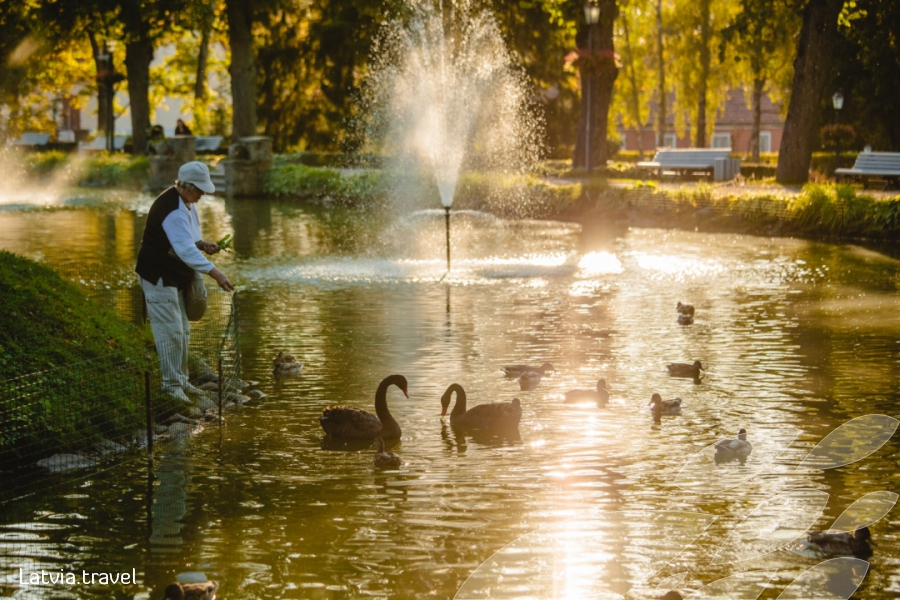

| Valmiera | Rīga | Cēsis |
|---|---|---|
 |
 |
 |
| Valmiera ir viena no senākajām Latvijas pilsētām, Hanzas savienības locekle, šobrīd Vidzemes plānošanas reģiona lielākā pilsēta. Tajā atrodas Valmieras Svētā Sīmaņa baznīca un Livonijas ordeņa Valmieras viduslaiku pils drupas.
Ko apskatīt Valmierā:
|
Rīga ir Latvijas galvaspilsēta un galvenais rūpnieciskais, darījumu, kultūras, sporta un finanšu centrs Baltijas valstīs, kā arī nozīmīga ostas pilsēta. Ar 704 476 iedzīvotājiem 2017. gadā[3] tā ir lielākā pilsēta Baltijas valstīs un trešā lielākā pilsēta (pēc Sanktpēterburgas un Stokholmas) visā Baltijas jūras reģionā (pēc iedzīvotāju skaita pilsētas robežās). Rīgas pilsētas platība ir 307,17 km2. Rīgas pilsētas robežās dzīvo aptuveni viena trešdaļa, bet Rīgas aglomerācijā (Rīga un tai pieguļošā teritorija, ieskaitot tuvākās pilsētas) gandrīz puse (0,94 miljoni) visu Latvijas iedzīvotāju. Rīgas plānošanas reģionā 2010. gada sākumā dzīvoja 1 081 137 iedzīvotāji. | Cēsis ir pilsēta Latvijā, Vidzemes augstienes ziemeļu daļā, Cēsu novada administratīvais centrs. Cēsis atrodas 90 km no Rīgas. Gar pilsētu plūst Gaujas upe. Cēsis ir viena no vecākajām pilsētām Latvijā, Hanzas savienības pilsēta un viena no Livonijas ordeņa mestru rezidencēm (1237—1561). Cēsis bija viena no Latvijas pilsētām, kas piedalījās konkursā par Eiropas kultūras galvaspilsētas statusu 2014. gadā, taču 2009. gada 15. septembrī Eiropas Komisijas žūrija ieteica šo statusu Latvijā piešķirt Rīgai.[3] |